1. Bevor du anfängst
Die Trading-Bilanz wächst mit dir in drei Stufen. Nach jeder Stufe kannst du aufhören.
Stufe 1: Auswertung. Du lädst die Reports aus MetaTrader 5 und siehst Gewinn, Rendite und Trefferquote deiner Konten.
Was du brauchst: einmal einen Computer mit MetaTrader 5 und den Zugang zum Tag-Portal (Kontonummer, Investor-Passwort).
Stufe 2: Dein echtes Geld. Du fügst die Tag-Daten ein und siehst, was du wirklich eingezahlt und ausgezahlt hast.
Was du brauchst: den Zugang zum Tag-Portal.
Stufe 3: Krypto-Steuer. Nur wenn du mit USDC oder USDT ein- oder auszahlst und deine Kryptos nicht schon mit einem anderen Tool rechnest. Du trägst ein, woher die Coins kamen und wohin sie gingen.
Was du brauchst: deine Kaufbelege oder die Datei deiner Börse, bei einer Krypto-Karte deren Belege, und am Ende den Kontostand jeder Wallet-App. Adressen brauchst du nicht.
Beim ersten Öffnen begrüßt dich das Tool und sagt kurz, was es kann. Im grauen Kästchen „Wo zahlst du Steuern?“ wählst du „Österreich“, „Deutschland“ oder „Ohne Steuer“. Das kannst du später im Reiter „Steuer“ ändern. Mit einem der beiden Knöpfe unten geht es los. Hast du ein Land gewählt, zeigt dir das Tool beim ersten Öffnen des Reiters „Steuer“ einen wichtigen Hinweis.
Dateien ziehst du einfach ins Tool
Am Computer ziehst du jede Datei ins Tool, egal welcher Reiter gerade offen ist. Das Tool erkennt, was es ist, und legt sie an den richtigen Ort.
Dateien wählst du mit einem Tippen
Am Handy tippst du auf ein Feld, das mit „Hier tippen, um …“ beginnt, und wählst die Datei aus. Bei jedem Schritt steht, wo dieses Feld ist.
So hilft dir das Tool
- (i) an jeder Karte erklärt, was die Karte zeigt.
- Gestrichelt unterstrichene Begriffe: Ein Klick zeigt eine Erklärung, sie bleibt offen.
- ▼ klappt eine Karte zu, das Tool merkt sich das.
- Nach jeder Änderung kommt unten kurz eine Meldung mit „Rückgängig“.
- Ein gelbes „!“ an einem Reiter heißt: Dort wartet etwas auf dich.
- „Anleitung mit Bildern ↗“ in den Fenstern führt direkt zur passenden Stelle dieser Anleitung.
Gut zu wissen: Deine Daten liegen nur in dem Browser, in dem du das Tool nutzt. Die Online-Version und eine heruntergeladene Datei speichern getrennt. Mit einer Sicherung nimmst du deine Daten mit.
Stufe 1: Auswertung
Reiter Reports Kurse
Du verbindest MetaTrader 5 mit deinen Konten, lädst die Reports ins Tool und wählst den Trading Benefit. Danach steht deine Auswertung.
2. MetaTrader 5 verbinden
Das geht nur am Computer. MetaTrader 5 am Handy und im Browser kann keine Reports speichern.
Das machst du nur einmal.
- Installiere MetaTrader 5 am Computer, am besten von der offiziellen Seite metatrader5.com ↗.
- Hole Kontonummer und Investor-Passwort: Öffne im Tag-Portal „CopyX → Follower Hub → Strategies“ und klicke dort beim Konto auf das Auge-Symbol unter „Credentials“.
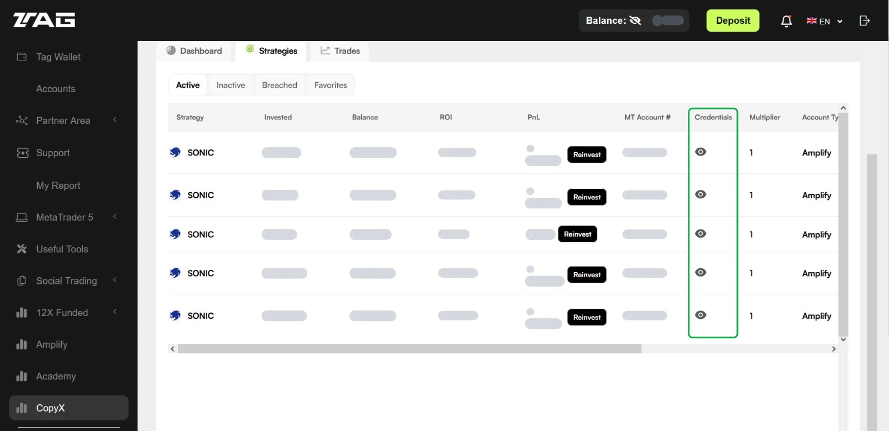
Zum Vergrößern anklicken. Grau verdeckt: Kontonummern und Beträge. - Wähle in MetaTrader 5 „Datei → Handelskonto eröffnen“ (engl. File → Open an Account) und suche „T.M. Financials Ltd“.
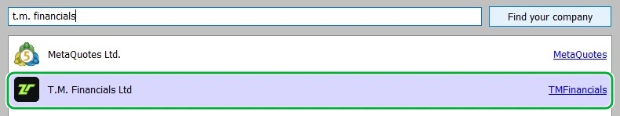
Klicke den Broker an und dann auf „Weiter“. - Wähle „mit dem aktuellen Handelskonto verbinden“ (engl. Connect with an existing trade account) und gib Kontonummer (engl. Login) und Investor-Passwort (engl. Password) ein. Der Server steht schon da.
Mit dem Investor-Passwort kannst du nur schauen, nicht handeln.
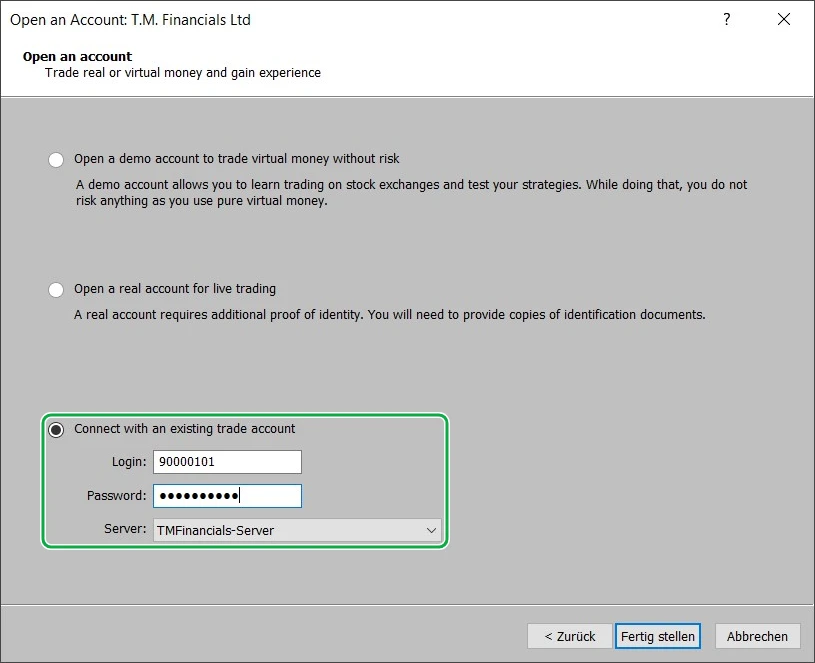
Die Kontonummer im Bild ist erfunden. Zum Schluss klickst du auf „Fertig stellen“. - Wiederhole das für jedes weitere Konto. Danach stehen alle Konten links im Navigator („Ansicht → Navigator“, engl. View → Navigator, Strg+N). Ein Doppelklick wechselt das Konto.
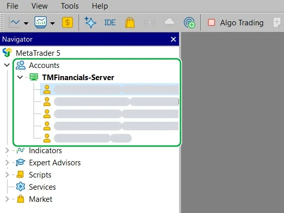
Grau verdeckt: Kontonummern und Namen.


3. Report speichern
Das geht nur am Computer. MetaTrader 5 am Handy und im Browser kann keine Reports speichern.
- Öffne MetaTrader 5 am Computer und wähle das Konto (Doppelklick im Navigator).
- Wähle „Ansicht → Terminal“ (engl. View → Toolbox) oder drücke Strg+T.
- Klicke im Fenster „Terminal“ (engl. Toolbox) auf den Reiter „Kontohistorie“ (engl. History).
- Klicke mit der rechten Maustastemit zwei Fingern (oder ctrl-Klick) in die Liste und wähle „Ganze Historie“ (engl. All History). Später reicht ein kürzerer Zeitraum, solange keine Lücke entsteht. Das Tool merkt eine Lücke.
- Klicke noch einmal mit der rechten Maustastemit zwei Fingern (oder ctrl-Klick) in die Liste, wähle „Bericht → HTML (Internet Explorer)“ (engl. Report → HTML (Internet Explorer)) und speichere die Datei.
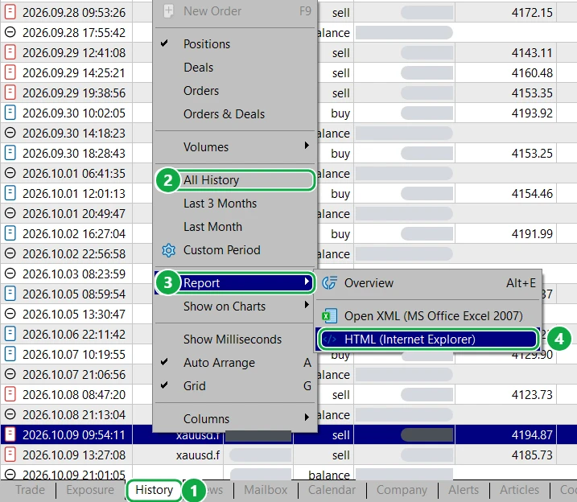
Die Kreise zeigen die Reihenfolge. Grau verdeckt: Ticketnummern und Mengen. - Wiederhole das für jedes Konto. Die Dateien heißen meist ReportHistory-Kontonummer.html. Den Ordner wählst du beim Speichern selbst.

4. Reports ins Tool laden
Öffne die Trading-Bilanz und ziehe alle gespeicherten Reports auf einmal ins Tool. Das Tool zeigt sie im Reiter „Reports“.
Öffne die Trading-Bilanz, tippe im Reiter „Reports“ auf das Feld „Hier tippen, um eine Report-Datei auszuwählen“ und wähle die Dateien aus. Du kannst alle auf einmal wählen.
Gemeint ist die HTML-Datei aus MetaTrader 5 (sie endet auf .html), nicht ein Report als PDF oder Excel.
5. Deine Konten
Nach dem Laden stehen deine Konten in der Karte „Deine Konten“. Wähle bei jedem Konto den Trading Benefit, meist „×12“ oder „×24“. Hast du einen anderen, wähle „andere Zahl …“ und gib ihn ein. Mit „für alle ▾“ im Spaltenkopf setzt du ihn für mehrere Konten auf einmal. Solange er fehlt, steht dort „fehlt“.

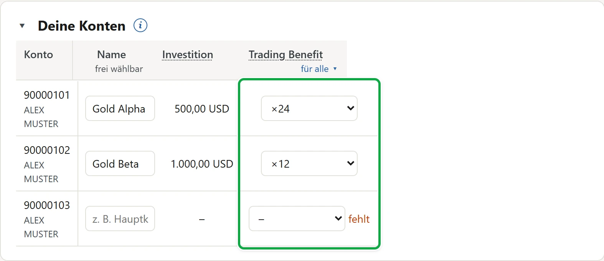
In der Spalte „Name“ kannst du jedem Konto einen individuellen Namen geben, um es in der Auswertung leicht zu erkennen.
Der Trading Benefit heißt bei Tag auch „Amplifier“. Tag vervielfacht damit dein eingezahltes Geld im MT5: Bei ×24 stehen 100 USD als 2.400 USD da. Gewinne, Performance Fee und Gewinnauszahlungen vervielfacht Tag nicht.
So findest du ihn: Öffne im Tag-Portal „CopyX → Follower Hub → Strategies“ und teile „Balance“ durch „Invested“. Die Spalte „Multiplier“ ist etwas anderes.
Hast du keinen Trading Benefit, wähle „×1“. Für die Steuer spielt er keine Rolle, nur für Investition und Rendite.
6. Wechselkurse laden
Für Beträge in Euro und für die Steuer braucht das Tool den Wechselkurs jedes Tages, an dem du eine Buchung hast. Es nimmt den Referenzkurs der Europäischen Zentralbank (EZB). In USD funktioniert die Auswertung auch ohne.
Die meisten Tage sind schon im Tool eingebaut. Fehlen die neuesten, lädt das Tool sie von selbst aus dem Internet, sobald du es öffnest, neue Reports lädst oder Tag-Daten einfügst. Du kannst sie auch im Reiter „Kurse“ mit „Kurse laden“ holen.

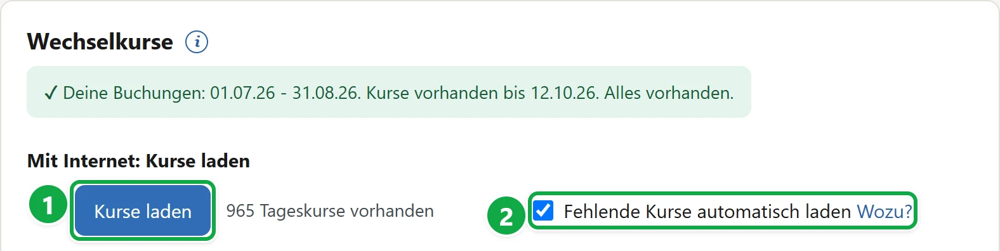
- „Kurse laden“ holt fehlende Kurse sofort.
- Das Laden von selbst steuert das Häkchen „Fehlende Kurse automatisch laden“. Es ist von Anfang an gesetzt. Nimmst du es weg, geht das Tool nur ins Internet, wenn du auf „Kurse laden“ klickst.
Ohne Internet: Soll das Tool gar nicht ins Internet gehen, lade die Datei selbst von der Seite der EZB ↗ herunter und ziehe sie ins Tool, tippe im Reiter „Kurse“ unter „Ohne Internet“ auf das Feld „Hier tippen, um eine EZB-Datei auszuwählen“ und wähle sie aus. Bei jedem Abruf, auch beim Herunterladen der Datei, sieht die EZB deine IP-Adresse.
Hier kannst du aufhören
Geschafft: Deine Auswertung steht. Willst du nur deine Ergebnisse sehen, kannst du hier aufhören. In Stufe 2 kommt die Karte „Dein echtes Geld“ dazu.

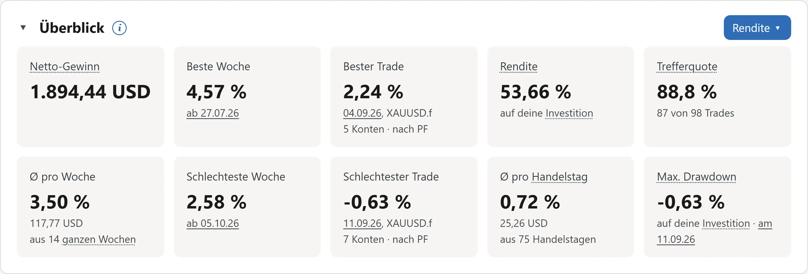
Stufe 2: Dein echtes Geld
Reiter Wallet
Im Reiter „Wallet“ hältst du fest, wie dein Geld zu Tag und zurück geflossen ist. Daraus rechnet das Tool „Dein echtes Geld“ und, wenn du mit USDC oder USDT ein- oder ausgezahlt hast, die Krypto-Steuer.
In Stufe 2 fügst du die Tag-Daten ein. In Stufe 3 trägst du ein, woher die Coins kamen, und arbeitest „Noch offen“ ab.
Das Beispiel in den Bildern (alles erfunden):
Am 30.06. kauft Anna bei Bitvavo 1.000,50 USDC und schickt 2 × 500 USDC in ihre eigene Wallet. Bei Kraken kauft sie 252 USDC für 230,00 € und schickt sie auch in ihre Wallet, dort kommen 250 USDC an.
Am 01.07. zahlt Anna bei Tag dreimal ein: 500, 500 und 250 USDC. Am 17.08. lässt sie sich 150 USDC in ihre Wallet auszahlen. Am 20.08. lädt sie 100 USDC auf ihre Krypto-Karte und zahlt damit am 22.08. im Supermarkt.
Die Schritte stehen in Du-Form: So machst du es mit deinen eigenen Daten.
7. Tag-Daten einfügen
Die Tag-Daten sind keine Datei. Du kopierst sie aus dem Tag-Portal und fügst sie ein. Dafür öffnest du ein Fenster im Tool.
Öffne den Reiter „Wallet“. Beim ersten Mal kommt das Fenster „Was du hier machst“. Klicke dort auf „Mit den Tag-Daten anfangen“.
Dann öffnet sich das Fenster „Daten“ mit dem Feld „Hier einfügen“. Später findest du es im Reiter „Wallet“ oben unter „＋ Daten“ bei „Tag-Daten“.

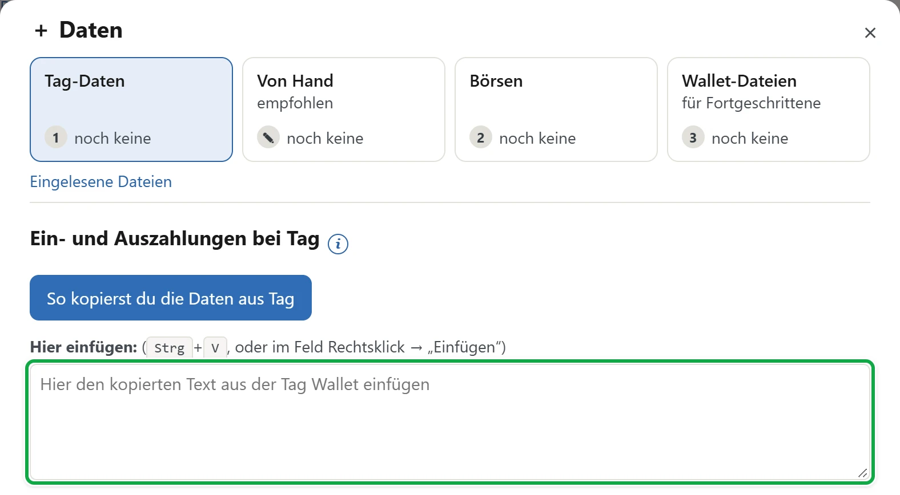
Öffne das Tag-Portal in einem zweiten Browser-Tab und gehe so vor:
- Klicke im Tag-Portal links auf „Tag Wallet“.
- Einzahlungen: Öffne links in der „Banking Zone“ „Transaction History“ und wähle bei „From“ ein Datum vor deiner ersten Einzahlung.
- Klicke auf „More Filters“, wähle bei „Method“ „PSP“ und klicke auf „Submit“. Wähle bei „Show“ die größte Zahl.
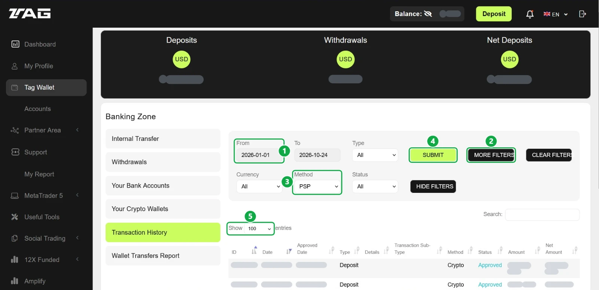
Die Kreise zeigen die Reihenfolge. Grau verdeckt: Guthaben, Summen, Nummern, Datum und Beträge. - Kopiere die ganze Seite und füge sie ins Feld „Hier einfügen“ ein. Klicke dann auf „Übernehmen“.
Oben auf der Seite stehen deine Summen bei Tag (Deposits, Withdrawals), unten die Anzahl der Einträge. Damit prüft das Tool, ob alles angekommen ist.
Klicke auf die Seite und drücke Strg+A, dann Strg+C. Klicke ins Feld „Hier einfügen“ und drücke Strg+V.Klicke auf die Seite und drücke ⌘ Cmd+A, dann ⌘ Cmd+C. Klicke ins Feld „Hier einfügen“ und drücke ⌘ Cmd+V.Drücke lange auf die Seite, wähle „Alles auswählen“, dann „Kopieren“. Tippe ins Feld „Hier einfügen“, drücke lange und wähle „Einfügen“.Das Tool zeigt dann eine Vorschau:
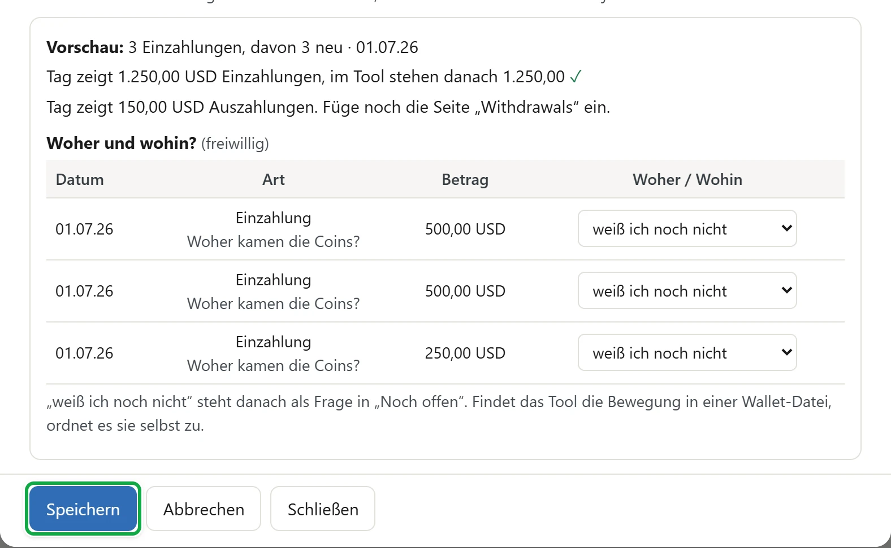
Beispiel mit erfundenen Daten. Die Auszahlungen fehlen noch, darum steht dort „Füge noch die Seite ‚Withdrawals‘ ein.“ Bei „Woher und wohin?“ wählst du bei jeder Einzahlung die Wallet, aus der die Coins kamen, und bei jeder Auszahlung die Wallet, in die sie gingen. Weißt du es noch nicht, lass „weiß ich noch nicht“ stehen. Das kannst du später beantworten. Klicke dann unten im Fenster auf „Speichern“.
- Auszahlungen: Öffne links in der „Banking Zone“ „Withdrawals“ und klicke auf „Display Processed Withdrawals“ (danach steht dort „Hide Processed Withdrawals“). Wähle bei „Show“ die größte Zahl, kopiere die ganze Seite und füge sie ins Feld „Hier einfügen“ ein. Klicke dann auf „Übernehmen“.
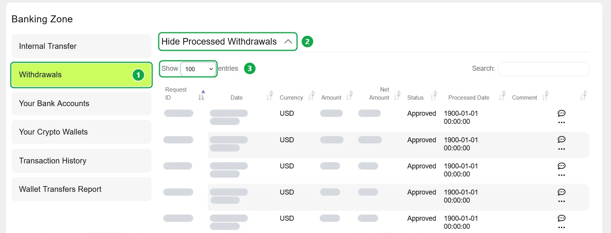
Die Kreise zeigen die Reihenfolge. Grau verdeckt: Guthaben, Summen, Nummern, Datum und Beträge. - Du kannst jederzeit wieder alles einfügen. Was schon da ist, erkennt das Tool.


PSP ist ein Filter bei Tag: Er zeigt nur Einzahlungen von außen, nicht die Überträge zwischen der Tag Wallet und deinen Trading-Konten.
Gut zu wissen: Zahlst du bei Tag USDC ein, tauscht Tag sie sofort in USD. Steuerlich ist das ein Verkauf. Bei einer Auszahlung in USDC ist es umgekehrt ein Kauf. Das Tool rechnet mit USDC und USDT.
Danach steht oben im Reiter „Wallet“ bei „Noch offen“ eine rote Zahl. Um die kümmern wir uns gleich im nächsten Abschnitt.
Hier kannst du aufhören
Jetzt zeigt die Auswertung auch „Dein echtes Geld“. Zahlst du nicht mit USDC oder USDT ein oder aus oder brauchst du die Krypto-Steuer nicht, kannst du hier aufhören. Die rote Zahl bei „Noch offen“ betrifft nur die Krypto-Steuer.

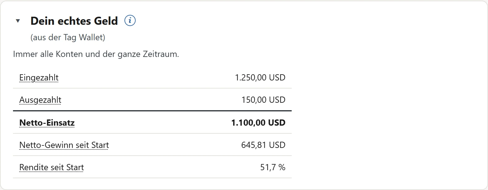
Schon ein anderes Krypto-Tool?
Rechnest du deine Kryptos schon mit einem anderen Tool, z. B. Blockpit? Dann hör hier auf, bleib bei deinem Tool und schalte die Krypto-Steuer in der Trading-Bilanz aus. Sonst zählen deine USDC und USDT doppelt. Die Trading-Bilanz rechnet dann nur den CFD-Teil der Steuer.
- Klicke im Reiter „Wallet“ oben auf das (i) am Ende des Einleitungstexts. Es öffnet sich das Fenster „Was du hier machst“.
- Klicke auf „Krypto-Steuer hier ausschalten“.
- Klicke bei der Rückfrage auf „Abschalten“.

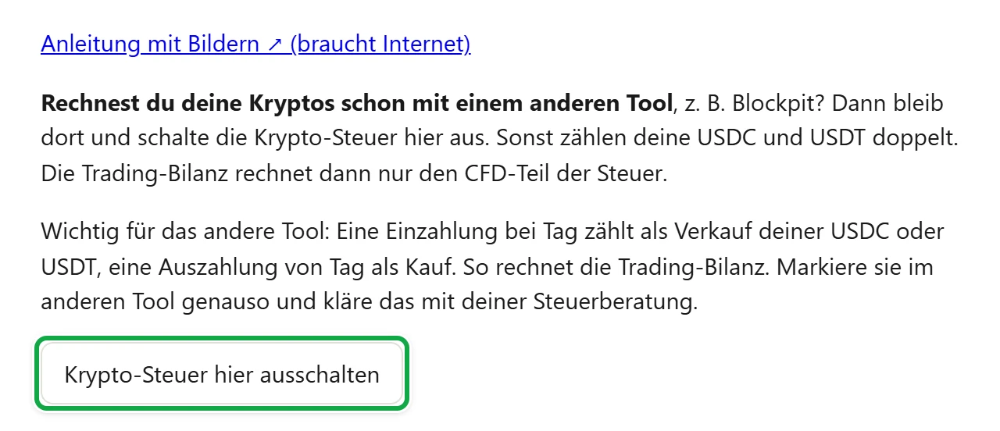
Danach zeigt „Noch offen“ keine roten Punkte mehr, nur noch Punkte zu deinen Beständen.
Wichtig für dein anderes Tool: Eine Einzahlung bei Tag zählt als Verkauf deiner USDC oder USDT, eine Auszahlung von Tag als Kauf (siehe Abschnitt 7, „Gut zu wissen“). So rechnet die Trading-Bilanz. Markiere sie in deinem Tool genauso und kläre das mit deiner Steuerberatung.
Den Schalter gibt es auch unten im Fenster „Noch offen“ und im Reiter „Steuer“ (Häkchen „Krypto in diese Abrechnung aufnehmen“). Einschalten kannst du die Krypto-Steuer jederzeit wieder.
Stufe 3: Krypto-Steuer
Reiter Wallet
Du trägst ein, woher die Coins kamen (mit der Börsen-Datei oder von Hand), auch deine Krypto-Karte, und arbeitest danach „Noch offen“ ab.
8. Was „Noch offen“ dir sagt
Nach dem Einfügen der Tag-Daten steht oben im Reiter „Wallet“ bei „Noch offen“ eine rote Zahl. Sie sagt, wie viele Fragen das Tool noch an dich hat.

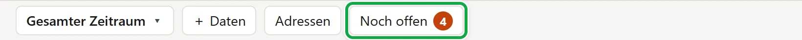
Klicke auf „Noch offen“. Ein Fenster zeigt dir die Fragen eine nach der anderen, die älteste zuerst. Das Tool nennt sie „Punkte“.

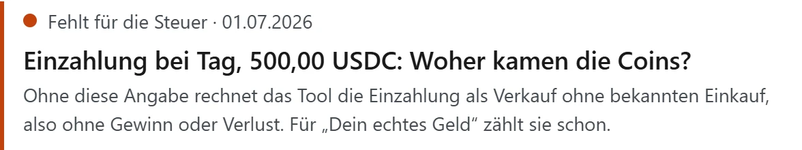
So liest du einen Punkt: Oben klein stehen die Farbe und das Datum. Darunter groß die Frage. Grau darunter steht, was das Tool macht, solange du nicht antwortest.
Die Farbe sagt, wie wichtig ein Punkt ist:
- Rot, fehlt für die Steuer: Ohne deine Antwort stimmt die Krypto-Steuer nicht.
- Gelb, bitte prüfen: Meist hat das Tool einen Vorschlag. Du übernimmst ihn oder lehnst ihn ab.
- Grau, gut zu wissen: An der Steuer ändert das nichts.

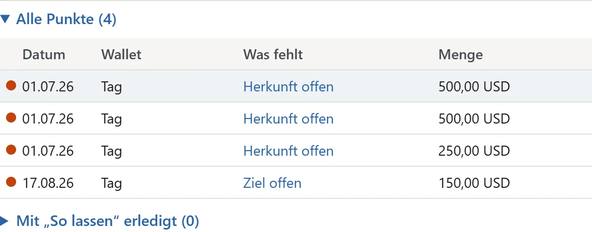
Weiter unten im Fenster stehen unter „Alle Punkte“ alle Punkte als Liste. Ein Klick auf eine Zeile zeigt diesen Punkt.
Warum fragt das Tool? Tag zeigt nur, dass Geld angekommen oder weggegangen ist. Hast du mit USDC oder USDT eingezahlt, zählt für die Steuer aber, wann und zu welchem Preis du diese Coins gekauft hast. Deshalb fragt das Tool bei jeder Einzahlung „Woher kamen die Coins?“ und bei jeder Auszahlung „Wohin gingen die Coins?“.
Für „Dein echtes Geld“ zählen die Ein- und Auszahlungen schon jetzt. Die Punkte betreffen nur die Krypto-Steuer.
Du musst jetzt noch nicht antworten. Schließe das Fenster und trage zuerst ein, woher die Coins kamen: mit der Börsen-Datei oder von Hand. Danach findet das Tool oft selbst die Antwort, und aus Rot wird Gelb.
Die Zahl kann zuerst steigen. Liest du eine Börsen-Datei ein, kommen manchmal neue Punkte dazu, zum Beispiel für einen Rest bei der Börse. Das ist normal. Die Meldung nach dem Einlesen sagt, welche Punkte neu sind und warum.
9. Börsen-Datei laden
Hast du deine Coins bei einer Börse gekauft, übernimmt das Tool Käufe, Verkäufe und Auszahlungen aus einer Datei der Börse. Bisher liest das Tool nur Dateien von Bitvavo. Hast du bei einer anderen Börse gekauft, zum Beispiel bei Kraken, trage den Kauf von Hand ein.
Die Datei bekommst du bei Bitvavo nur im Browser am Computer, nicht in der App.
So bekommst du die Datei bei Bitvavo
Die Bilder zeigen Bitvavo auf Englisch, die englischen Namen stehen in Klammern. Ob Bitvavo bei dir deutsch oder englisch eingestellt ist, spielt keine Rolle: Die Datei ist in beiden Sprachen gleich.
- Öffne bitvavo.com im Browser am Computer und melde dich an. In der App von Bitvavo gibt es die Datei nicht.
- Fahre mit der Maus über deinen Namen oben rechts. Im Menü, das sich dann öffnet, klicke auf „Transaktionsverlauf“ (engl. Transaction history).
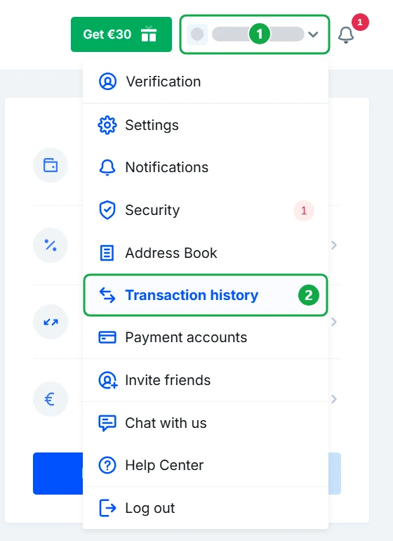
Die Kreise zeigen die Reihenfolge. Grau verdeckt: Name. - Klicke auf der Seite „Transaktionsverlauf“ (engl. Transaction History) rechts oben auf „Exportieren“ (engl. Export).
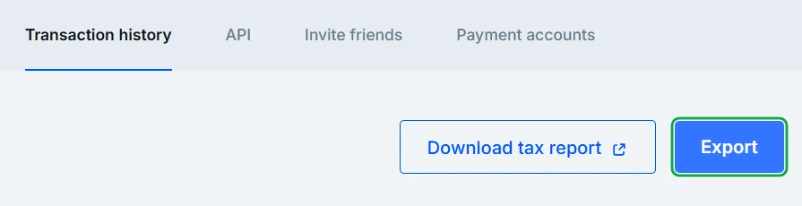
Grau verdeckt: Name. - Wähle im Fenster „Vollständige Transaktionshistorie (CSV)“ (engl. Full history (CSV)) und klicke auf „Exportieren“ (engl. Export). Die Datei heißt „Vollständige Transaktionshistorie.csv“ (engl. „Full history.csv“) und landet in deinem Ordner für Downloads.
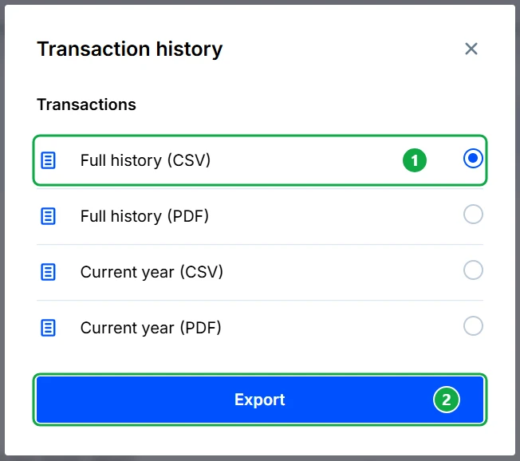
Die Kreise zeigen die Reihenfolge.


„Aktuelles Jahr (CSV)“ (engl. Current year (CSV)) geht auch. Mit der vollständigen Datei hat das Tool aber alle Käufe, auch die aus früheren Jahren.
Ziehe die Datei ins Tool. Das Tool öffnet das Fenster „Daten“ und zeigt eine Vorschau.
Öffne im Reiter „Wallet“ oben „＋ Daten“, wähle „Börsen“, tippe auf das Feld „Hier tippen, um eine Börsen-Datei (.csv) auszuwählen“ und wähle die Datei aus. Das Tool zeigt eine Vorschau.

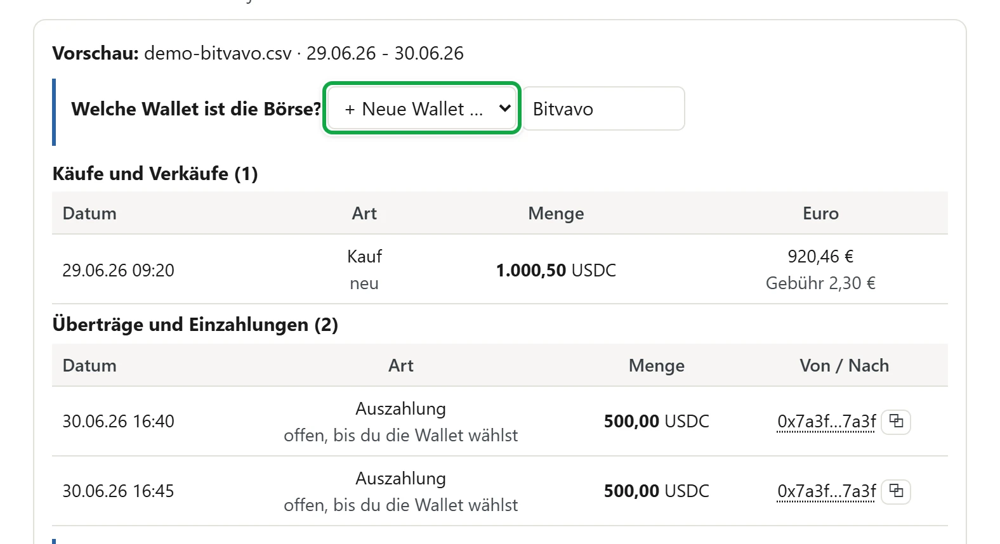
Welche Wallet ist die Börse? Beim ersten Mal legt das Tool eine neue Wallet an und schlägt den Namen „Bitvavo“ vor. Lass das so.
Darunter steht, was das Tool übernimmt. „neu“ heißt: Das ist noch nicht im Tool.

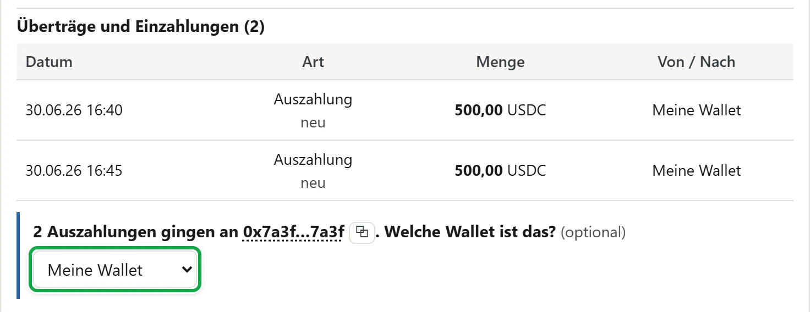
Welche Wallet ist das? Hier fragt das Tool, wohin du die Coins von der Börse geschickt hast. Im Beispiel gingen beide Auszahlungen in Annas eigene Wallet: Wähle „Meine Wallet“.
Ohne Wahl wird jede dieser Auszahlungen ein roter Punkt in „Noch offen“. Den kannst du auch später beantworten.

Klicke unten auf „Übernehmen“. Die Meldung sagt, was das Tool übernommen hat und was sich in „Noch offen“ ändert. Im Beispiel kommt ein Punkt dazu (ein Rest von 0,50 USDC bei Bitvavo), und zu 2 Einzahlungen bei Tag hat das Tool jetzt einen Vorschlag.
Du kannst die Datei später wieder einlesen, zum Beispiel jeden Monat. Was schon da ist, erkennt das Tool.
Ein- und Auszahlungen in Euro übernimmt das Tool nicht, ebenso Käufe und Verkäufe anderer Coins. Einen Tausch zwischen einem anderen Coin und USDC oder USDT übernimmt es (Abschnitt 12).
10. Von Hand eintragen
Was keine Datei hat, trägst du von Hand ein, zum Beispiel einen Kauf bei einer anderen Börse oder einen Übertrag in deine Wallet. Öffne im Reiter „Wallet“ oben „＋ Daten“ und wähle „Von Hand“.

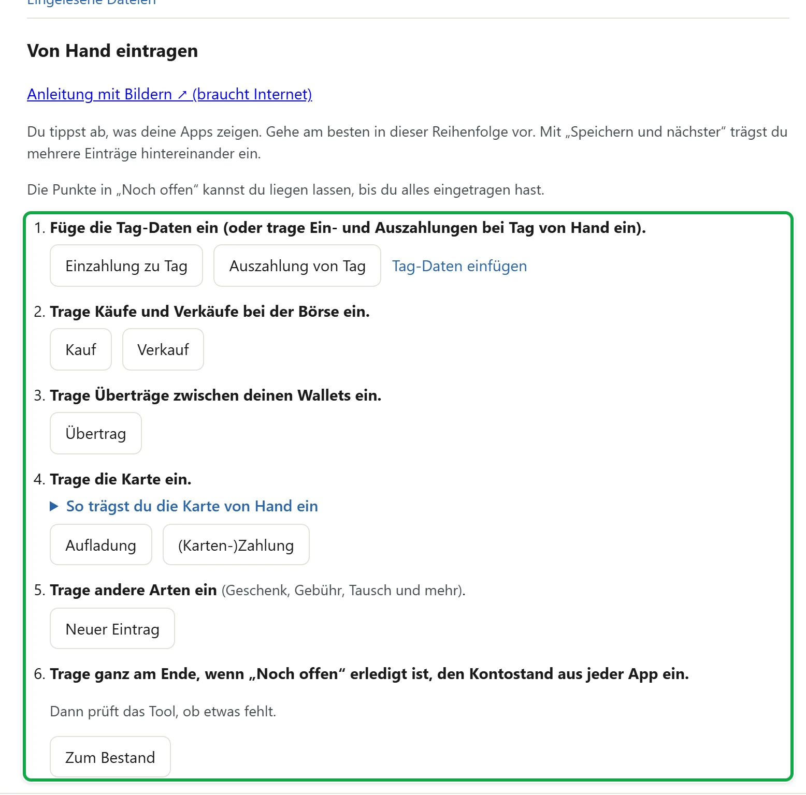
Die Liste hat eine Reihenfolge. Gehe sie von oben nach unten durch und lass die Punkte in „Noch offen“ so lange liegen:
- Tag: Hast du die Tag-Daten eingefügt, ist hier nichts mehr zu tun.
- Käufe und Verkäufe bei einer Börse, die keine Datei hat.
- Überträge zwischen deinen Wallets, auch von der Börse in deine Wallet.
- Die Karte, wenn du eine Krypto-Karte hast (Abschnitt 11).
- Andere Arten wie Geschenk, Gebühr oder Tausch (Abschnitt 12).
- Der Kontostand aus jeder App, aber erst ganz am Ende, wenn „Noch offen“ erledigt ist.
Beispiel: Kauf bei Kraken
Anna hat am 30.06. bei Kraken 252 USDC für 230,00 € gekauft. Klicke in der 2. Kategorie auf „Kauf“.

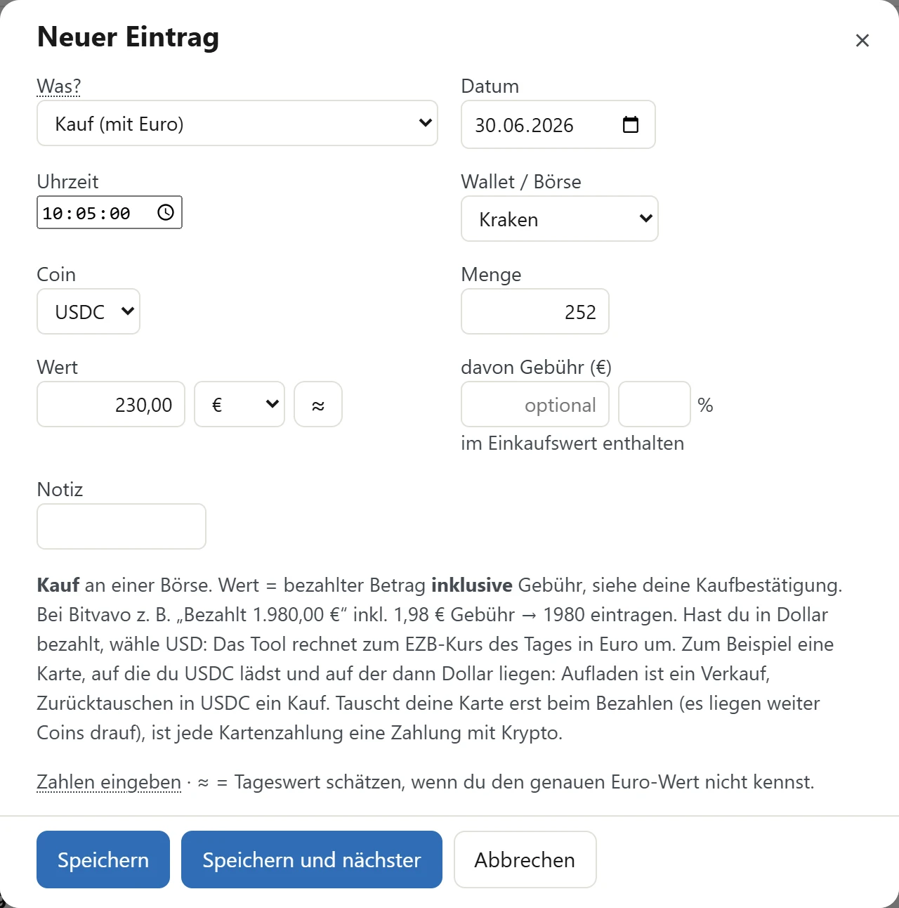
- Trage Datum und Uhrzeit aus deiner Kaufbestätigung ein.
- Bei „Wallet / Börse“ wählst du „+ Neue Wallet …“, tippst „Kraken“ und klickst auf „OK“.
- Wähle den Coin und trage die Menge ein.
- Bei „Wert“ trägst du den bezahlten Betrag in Euro mit der Gebühr ein.
Klicke auf „Speichern“, oder auf „Speichern und nächster“, wenn noch ein Eintrag kommt.
Beispiel: Übertrag von Kraken in deine Wallet
Danach hat Anna die 252 USDC von Kraken in ihre Wallet geschickt, angekommen sind 250 USDC. Klicke in der 3. Kategorie auf „Übertrag“.

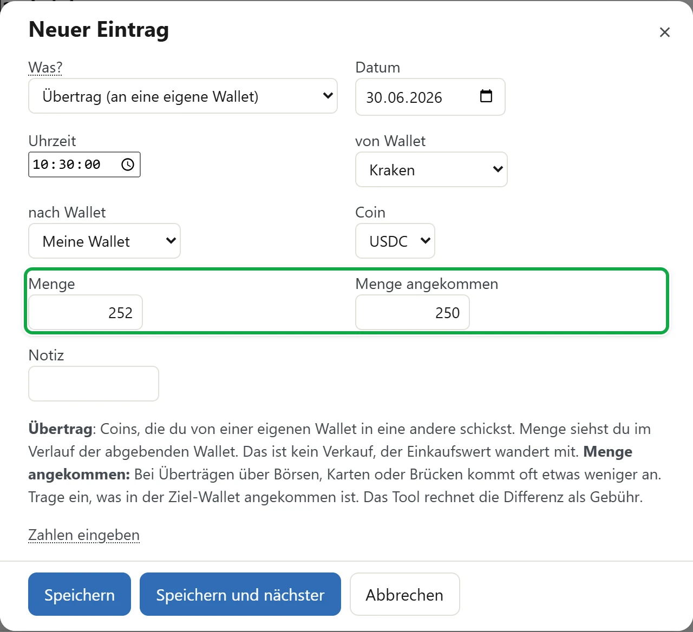
Wähle bei „von Wallet“ Kraken und bei „nach Wallet“ deine Wallet. Bei „Menge“ trägst du ein, was abgebucht wurde, bei „Menge angekommen“, was in deiner Wallet ankam. Den Unterschied rechnet das Tool als Gebühr.
Deiner Wallet einen Namen geben
Im Beispiel heißt Annas Wallet „Meine Wallet“. Diesen Namen legt das Tool am Anfang selbst an. Du kannst ihn ändern: Klicke im Reiter „Wallet“ oben auf „Adressen“ und in der Zeile deiner Wallet auf „✎“.

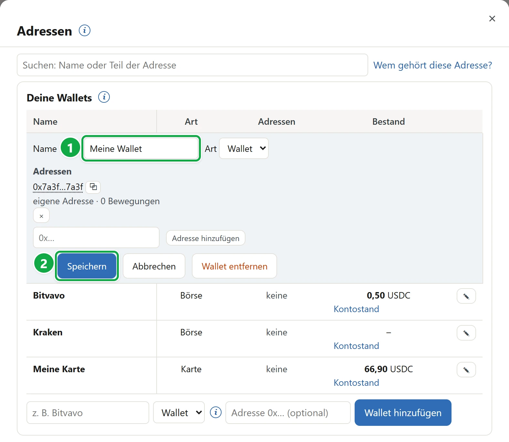
- Gib den neuen Namen ein, zum Beispiel den Namen deiner Wallet-App.
- Klicke auf „Speichern“.
Den Kontostand trägst du ganz am Ende ein, wenn „Noch offen“ erledigt ist (Abschnitt 14). Vorher passt er oft noch nicht zu deinen Einträgen.
11. Deine Krypto-Karte
Mit einer Krypto-Karte zahlst du im Geschäft mit deinen Coins. Für die Steuer ist jede Kartenzahlung ein Verkauf. Deshalb trägst du beides ein: wie viel du auf die Karte geladen hast und jede Zahlung damit.
- Deine Wallet
- Aufladung(mit Gebühr)
- Karte
- Kartenzahlung
- Geschäft
Annas Karte (erfunden): Am 20.08. lädt Anna 100 USDC aus „Meine Wallet“ auf ihre Karte, an kommen 99 USDC. Am 22.08. zahlt sie im Supermarkt, abgebucht werden 32,10 USDC.
Die Aufladung
Öffne im Reiter „Wallet“ oben „＋ Daten“, wähle „Von Hand“ und klicke in der 4. Kategorie auf „Aufladung“. Es öffnet sich das Formular für einen Übertrag.

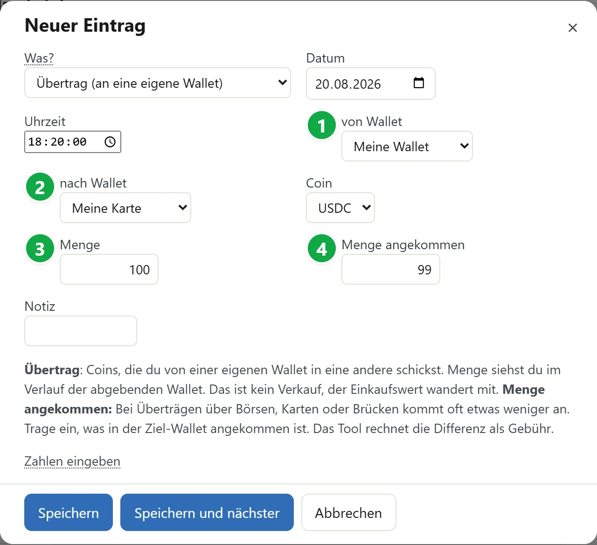
- Wähle bei „von Wallet“ die Wallet, aus der du aufgeladen hast.
- Bei „nach Wallet“ wählst du beim ersten Mal „+ Neue Karte …“, tippst „Meine Karte“ und klickst auf „OK“. Hast du schon eine Karte, steht sie dort schon.
- Bei „Menge“ trägst du ein, was von deiner Wallet abging, im Beispiel 100.
- Bei „Menge angekommen“ trägst du ein, was die Karten-App als Aufladung zeigt, im Beispiel 99. Den Unterschied rechnet das Tool als Gebühr.
Klicke auf „Speichern“.
Die Kartenzahlung
Klicke in der 4. Kategorie auf „(Karten-)Zahlung“. Es öffnet sich das Formular für eine Zahlung, bei „Wallet / Börse“ steht schon deine Karte.

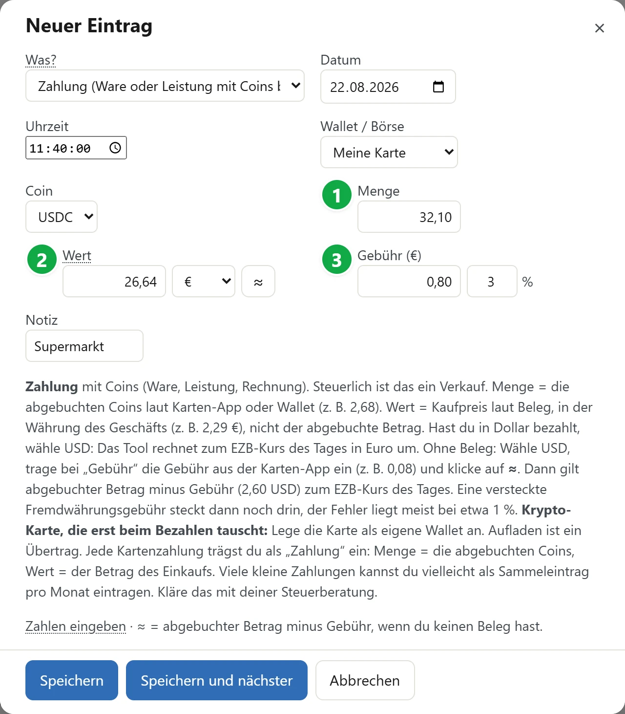
- Trage bei „Menge“ ein, was abgebucht wurde, mit Gebühr. Im Beispiel 32,10 USDC.
- Bei „Wert“ trägst du den Betrag vom Kassenbon in Euro ein, im Beispiel 26,64 €.
- Bei „Gebühr“ trägst du ins Feld mit „%“ ein, was die Karte dazu verlangt, im Beispiel 3. Das Tool rechnet daraus 0,80 €.
Klicke auf „Speichern“. Trage so jede Kartenzahlung ein. Ganz am Ende trägst du in Abschnitt 14 auch den Kontostand aus der Karten-App ein, im Beispiel 66,90 USDC. Dann prüft das Tool, ob eine Zahlung fehlt.
Mit Wallet-Dateien liest das Tool Aufladungen und Kartenzahlungen auch selbst ein. Eine Anleitung mit Bildern dazu folgt später.
12. Coins getauscht
Nur wenn du getauscht hast: einen anderen Coin, z. B. ETH, in USDC oder USDT, oder umgekehrt. Sonst überspring diesen Abschnitt.
Die Trading-Bilanz rechnet nur mit USDC und USDT. Ein Tausch mit einem anderen Coin ist die Grenze zwischen dem Tool und deinen anderen Coins. Über diese Grenze wandert eine Zahl: der Einkaufswert. Das Tool zeigt dir jede dieser Zahlen in der Karte „Andere Coins“. Deine anderen Coins rechnet es nicht.
Annas Tausch (erfunden): Am 28.07. kauft Anna bei Bitvavo 0,012 ETH für 20,00 €. Am 25.08. tauscht sie dort 0,003 ETH in USDC. Am 26.08. tauscht sie bei Kraken 0,01 ETH in USDC. Diese ETH hat sie früher bei Kraken gekauft, 0,015 ETH für 30,00 €.
In Österreich
Aus anderem Coin getauscht (z. B. ETH → USDC)
Das ist kein Verkauf. Deine USDC übernehmen den Einkaufswert der ETH, die du dafür hergegeben hast.
Mit der Börsen-Datei
Hast du die ETH bei derselben Börse gekauft, fragt die Vorschau: „Woher kamen die 0,003 ETH, die du am 25.08. getauscht hast?“ Wähle deinen Kauf, dann rechnet das Tool den Einkaufswert selbst. Kamen die Coins anders dazu oder weißt du es nicht, wähle die zweite Möglichkeit. Dann nimmt das Tool einen Ersatzwert (siehe unten).

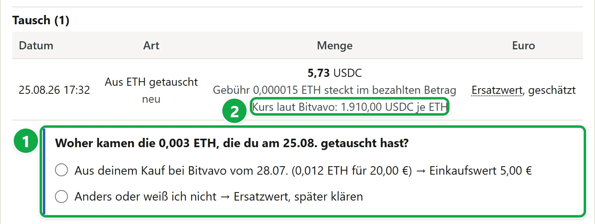
- Die Frage und die zwei Möglichkeiten.
- Der Kurs laut Bitvavo.
Von Hand
Öffne „＋ Daten“, wähle „Von Hand“, klicke in der 5. Kategorie auf „Neuer Eintrag“ und wähle bei „Was?“ „Aus anderem Coin getauscht“.
Trage Datum und Uhrzeit ein, wähle die Wallet / Börse und den Coin, den du bekommen hast.

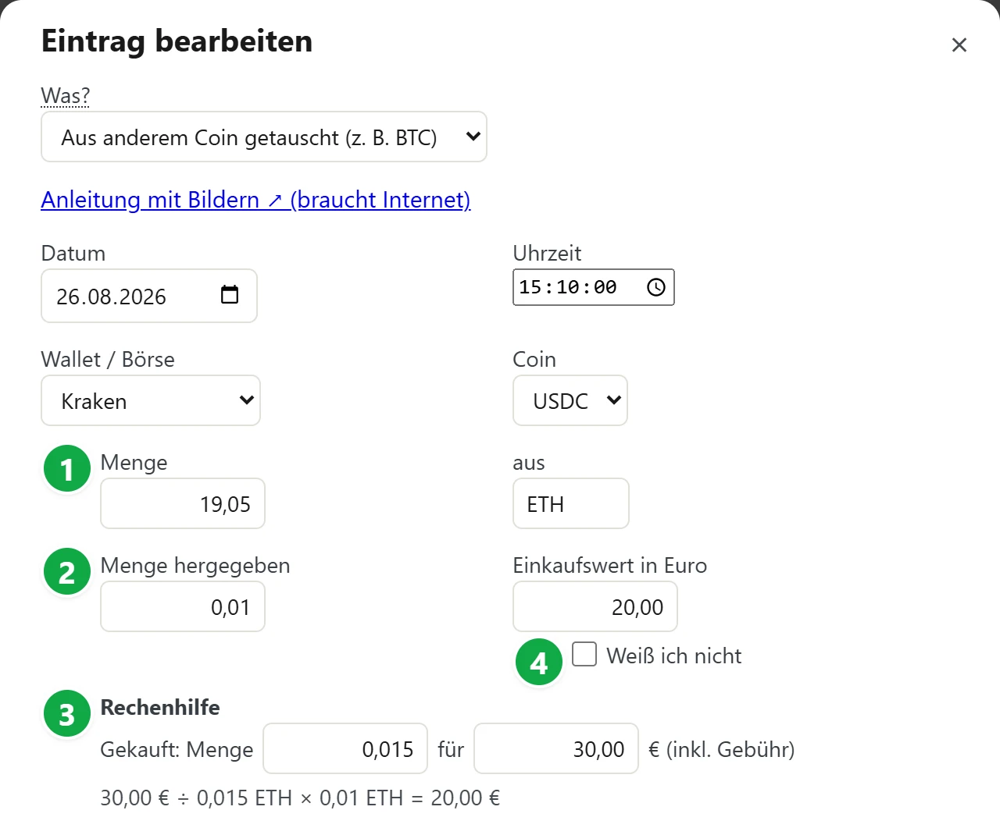
- Menge: die USDC, die du bekommen hast, nach der Gebühr.
- Menge hergegeben: die ETH, die weggegangen sind.
- Einkaufswert in Euro: was diese ETH dich damals gekostet haben, mit Gebühr, nicht ihr Wert am Tausch-Tag. Die Rechenhilfe rechnet ihn aus: bezahlt ÷ gekaufte Menge × getauschte Menge. Im Beispiel 30,00 € ÷ 0,015 ETH × 0,01 ETH = 20,00 €.
- Weiß ich nicht: Setze das Häkchen, wenn du den Einkaufswert nicht findest.
Wo finde ich den Einkaufswert? In der Kaufbestätigung oder im Verlauf der Börse, bei der du die Coins gekauft hast. Mehrmals gekauft? Alle bezahlten Beträge zusammen ÷ alle gekauften Mengen zusammen. Hast du zwischendurch schon verkauft oder getauscht, stimmt das nur ungefähr.
Weiß ich nicht
Dann nimmt das Tool einen Ersatzwert: den Wert deiner USDC am Tausch-Tag. Er kann zu hoch oder zu niedrig sein, je nachdem, ob der Coin seit deinem Kauf gestiegen oder gefallen ist. In „Noch offen“ steht dazu ein gelber Punkt.

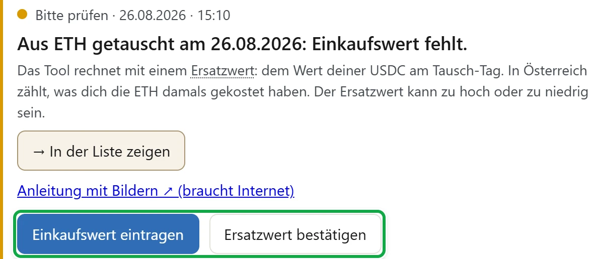
Mit „Einkaufswert eintragen“ trägst du ihn nach. Mit „Ersatzwert bestätigen“ behältst du den Ersatzwert, kläre das mit deiner Steuerberatung. Das kannst du später zurücknehmen.
In anderen Coin getauscht (z. B. USDC → ETH)
Öffne „＋ Daten“, wähle „Von Hand“, klicke in der 5. Kategorie auf „Neuer Eintrag“ und wähle bei „Was?“ „In anderen Coin getauscht“.
Das ist kein Verkauf. Trage bei „Menge“ die USDC ein, die weggegangen sind, mit Gebühr. Sonst nichts. Das Tool rechnet aus, welcher Einkaufswert auf die neuen Coins übergeht, und zeigt ihn in der Karte „Andere Coins“. Du brauchst ihn, wenn du diese Coins später verkaufst. Hast du keine Kryptowährung bekommen, z. B. ein NFT, setze das Häkchen dafür. Dann ist es ein Verkauf.
In Deutschland
Aus anderem Coin getauscht (z. B. ETH → USDC)
Das sind zwei Vorgänge: ein Verkauf deiner ETH und ein Kauf der USDC.
Mit der Börsen-Datei
Lies die Datei ein wie in Abschnitt 9. Die Vorschau zeigt den Tausch als „Aus ETH getauscht“. Du musst nichts wählen.
Von Hand
Öffne „＋ Daten“, wähle „Von Hand“, klicke in der 5. Kategorie auf „Neuer Eintrag“ und wähle bei „Was?“ „Aus anderem Coin getauscht“.
Im Beispiel Annas Tausch bei Kraken am 26.08.: 0,01 ETH in 19,05 USDC. Trage Datum und Uhrzeit ein, wähle die Wallet / Börse und den Coin, den du bekommen hast.

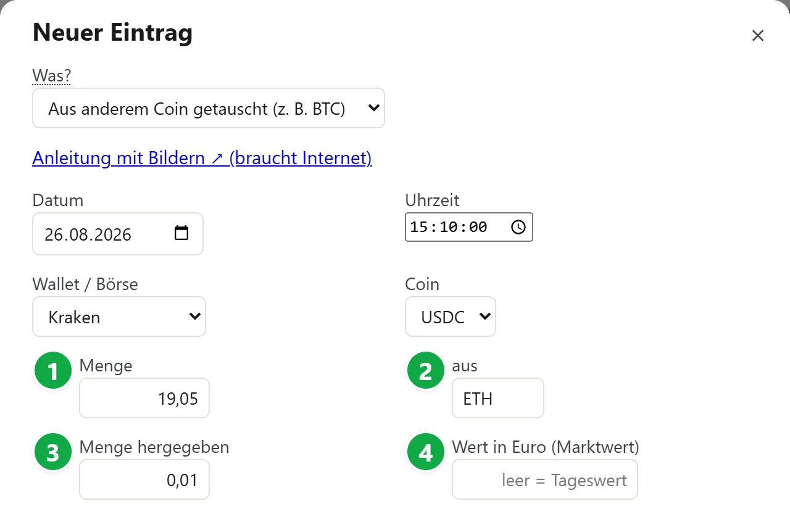
- Menge: die USDC, die du bekommen hast, nach der Gebühr.
- aus: der Coin, den du hergegeben hast.
- Menge hergegeben: die ETH, die weggegangen sind. Dieses Feld ist optional. Die Menge steht dann in der Karte „Andere Coins“ und in der Excel mit allen Daten.
- Wert in Euro (Marktwert): Lass das Feld leer. Das Tool nimmt dann den Euro-Wert der USDC am Tausch-Tag.
Dieser Wert ist ihr Einkaufswert, der Tausch-Tag ihr Kaufdatum.
Den Gewinn oder Verlust deiner ETH rechnet das Tool nicht. Rechne ihn mit einem Krypto-Steuertool oder mit deiner Steuerberatung. Als Verkaufspreis gilt derselbe Euro-Wert, die Karte „Andere Coins“ zeigt ihn. Trage den Gewinn im Reiter „Steuer“ unter „Andere private Veräußerungsgewinne“ ein, damit die Freigrenze stimmt.
In anderen Coin getauscht (z. B. USDC → ETH)
Öffne „＋ Daten“, wähle „Von Hand“, klicke in der 5. Kategorie auf „Neuer Eintrag“ und wähle bei „Was?“ „In anderen Coin getauscht“.
Im Beispiel tauscht Anna am 27.08. bei Kraken 10 USDC in ETH. Trage Datum und Uhrzeit ein, wähle die Wallet / Börse und den Coin, den du hergegeben hast.

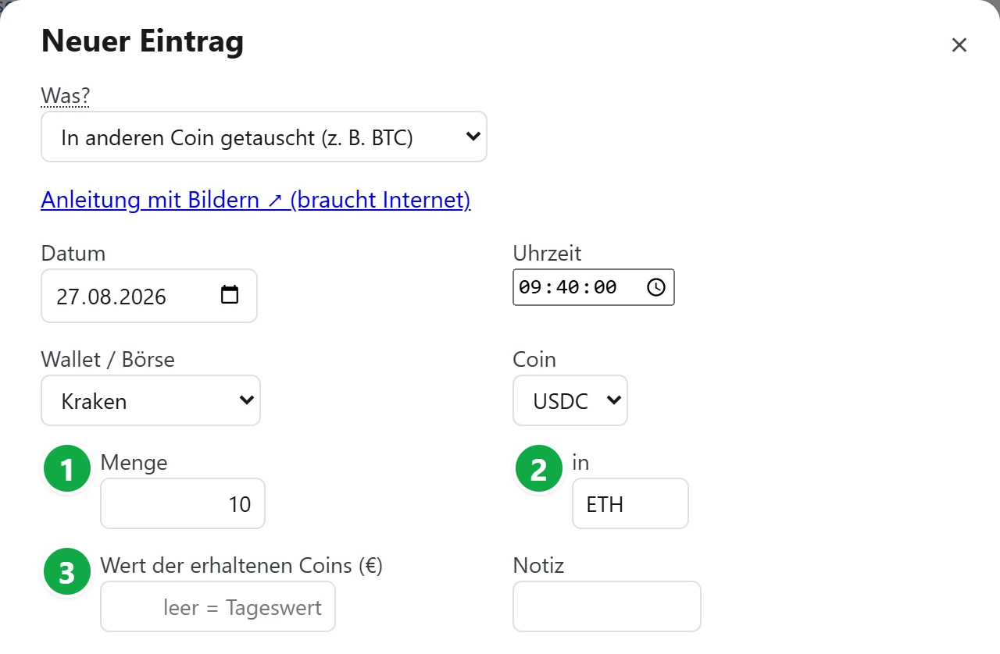
- Menge: die USDC, die weggegangen sind, mit Gebühr.
- in: der Coin, den du bekommen hast.
- Wert der erhaltenen Coins (€): Lass das Feld leer. Das Tool nimmt dann den Tageswert der hergegebenen USDC.
Das ist ein Verkauf deiner USDC. Derselbe Wert ist der Einkaufswert deiner neuen Coins, der Tausch-Tag ihr Kaufdatum. Beides zeigt die Karte „Andere Coins“.
Die Karte „Andere Coins“
Im Reiter „Wallet“ steht zwischen „Bestand jetzt“ und „Alle Vorgänge“ die Karte „Andere Coins“. Sie zeigt jeden Tausch mit einem anderen Coin und den Wert, der dabei wandert. Hast du in einen anderen Coin getauscht, ist das sein Einkaufswert. Du brauchst ihn, wenn du den Coin später verkaufst.

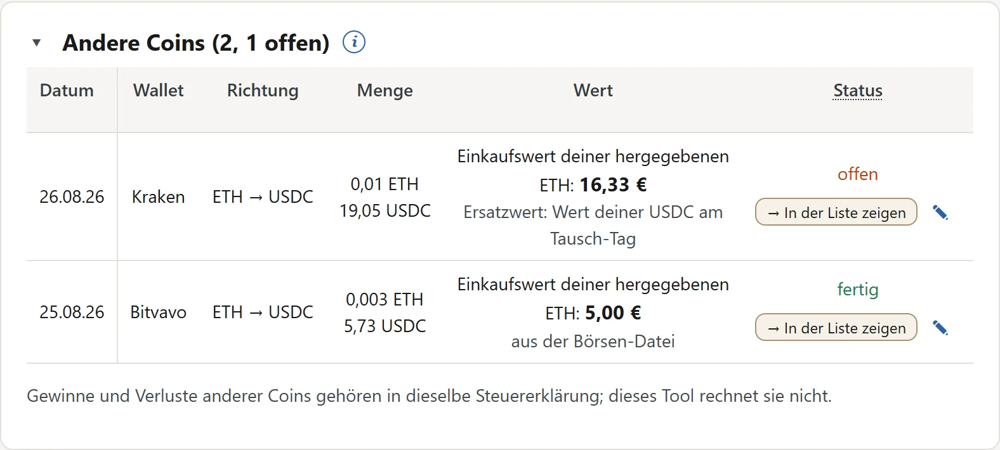
Mit „✎“ bearbeitest du einen Eintrag, „In der Liste zeigen“ springt zu „Alle Vorgänge“.
Was der Status sagt:
- fertig: Der Wert steht fest.
- offen: Das Tool rechnet mit dem Ersatzwert, und du hast noch nicht entschieden. Dazu steht ein gelber Punkt in „Noch offen“.
- Ersatzwert bestätigt: Du behältst den Ersatzwert.
- mit Ersatzwert: Der Wert selbst ist richtig gerechnet. In seine Rechnung fließt aber ein Ersatzwert aus einem anderen Eintrag ein. Klärst du diesen Eintrag, wird er von selbst „fertig“.
- Kurs fehlt: Für diesen Tag fehlt noch der Wechselkurs. Lade ihn im Reiter „Kurse“, danach stimmt der Wert von selbst.
13. „Noch offen“ abarbeiten
Wenn du alles eingetragen hast, öffne wieder „Noch offen“. Jetzt sind viele Punkte gelb: Zu ihnen hat das Tool einen Vorschlag gefunden.
So gehst du vor
- Stimmt der Vorschlag, klicke auf „Übernehmen“.
- Stimmt er nicht, klicke auf „Nein“ und wähle selbst.
- Weißt du es nicht, lass den Punkt für später oder klicke auf „So lassen“.
Der Vorschlag

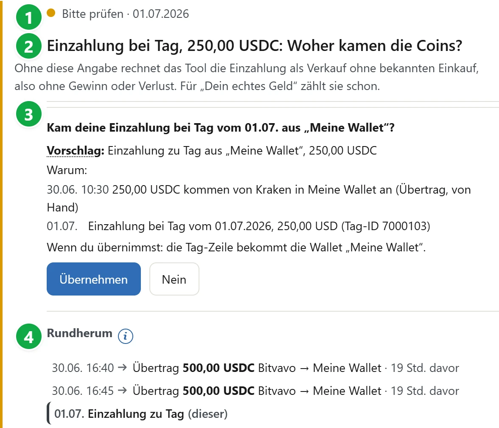
- Farbe und Datum: Gelb heißt, das Tool hat einen Vorschlag.
- Die Frage, um die es geht.
- Der Vorschlag: was das Tool eintragen würde, warum und was sich dann ändert. Stimmt er, klicke auf „Übernehmen“, sonst auf „Nein“. Dann fragt das Tool nicht wieder.
- „Rundherum“ zeigt, was sich in deinen Wallets kurz davor und danach bewegt hat. Ein Klick auf eine Zeile springt zu diesem Vorgang in der Liste „Alle Vorgänge“. Mit „← Zurück zu „Noch offen““ oben in der Liste kommst du zurück.
Selbst wählen

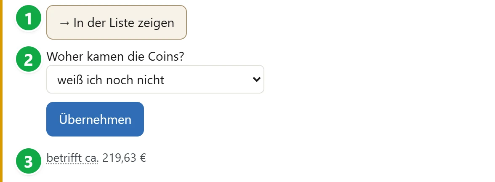
- „In der Liste zeigen“ springt zu diesem Vorgang in der Liste „Alle Vorgänge“.
- Hier antwortest du selbst: Wähle die Wallet, aus der die Coins kamen, und klicke auf „Übernehmen“.
- „betrifft ca.“ sagt, um wie viel Euro es ungefähr geht.
Hat das Tool keinen Vorschlag, oder stimmt er nicht, wählst du hier selbst. Kam das Geld als Euro über die Bank, wähle „Bank“.
Mit „Nächster“ und „Zurück“ unten im Fenster blätterst du durch die Punkte.
Viele Vorschläge auf einmal

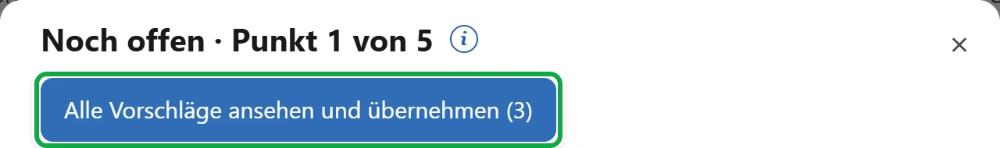
Direkt unter dem Titel von „Noch offen“ steht dann „Alle Vorschläge ansehen und übernehmen“. Den Knopf gibt es nur, wenn das Tool sich sicher ist. Vorschläge über einen Dienst oder mit mehreren Möglichkeiten entscheidest du einzeln.

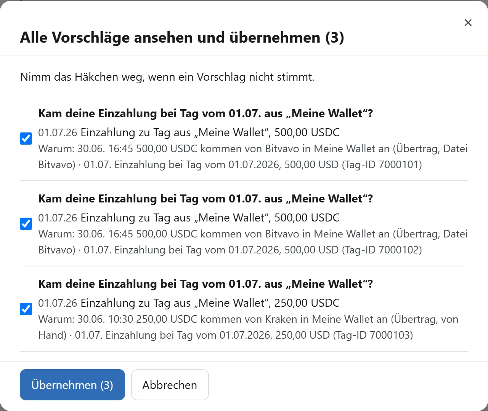
Das Fenster zeigt jeden Vorschlag mit einem Häkchen. Nimm das Häkchen weg, wo ein Vorschlag nicht stimmt, und klicke auf „Übernehmen“.
Ein Vorschlag kommt dazu
Danach steht oben „Alle Vorschläge ansehen und übernehmen (1)“. Das Tool fragt, ob die 150 USDC vom 17.08. in „Meine Wallet“ gingen, denn ohne sie fehlen dort am 20.08. 100 USDC für die Aufladung. Das stimmt, also klicke auf „Übernehmen“.

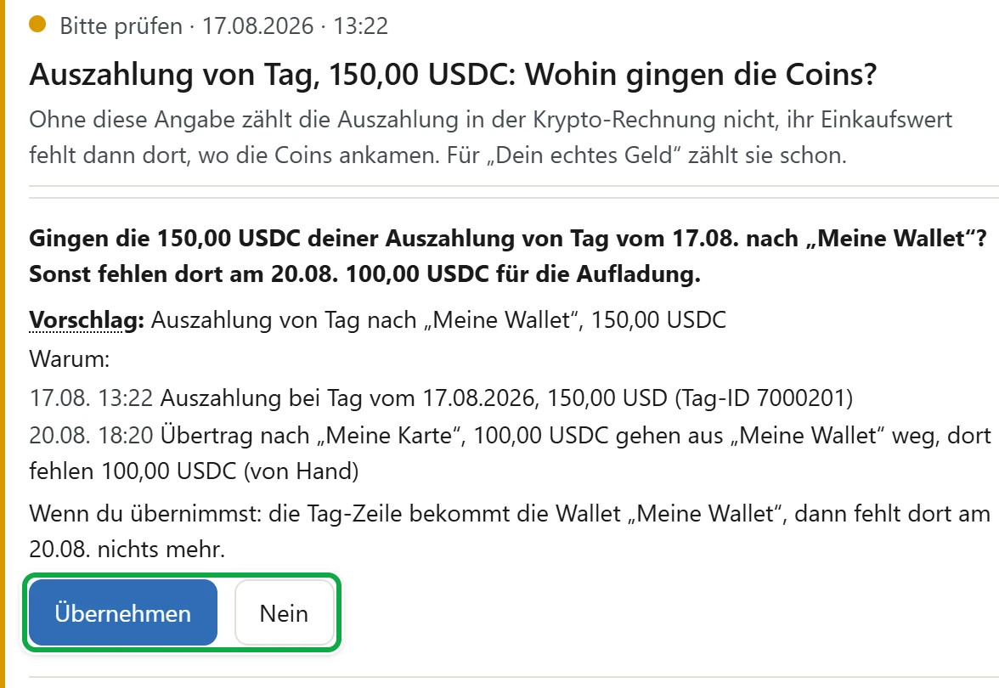
So fragt das Tool, wenn das Geld höchstens 90 Tage nach der Auszahlung fehlt. Reicht eine Auszahlung allein nicht, schlägt es bis zu drei zusammen vor. Jede davon beantwortest du einzeln.
So lassen

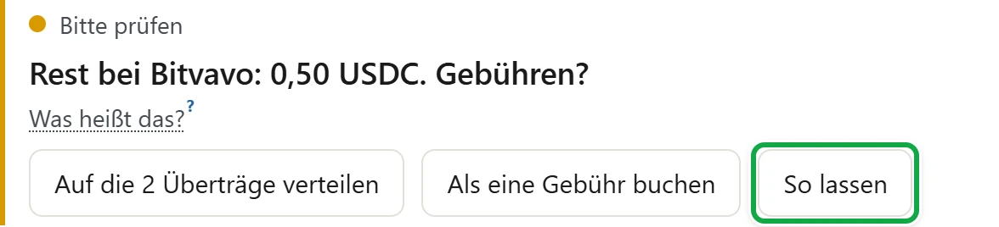
Manche Punkte kannst oder willst du nicht klären. Im Beispiel liegen noch 0,50 USDC bei Bitvavo. Klicke auf „So lassen“, dann fragt das Tool nicht wieder. Waren es Gebühren, nimm einen der anderen beiden Knöpfe.
„So lassen“ gibt es auch, wenn der Einkauf fehlt. Dann rechnet das Tool diesen Teil ohne Gewinn oder Verlust, und im Reiter „Steuer“ steht dazu ein Satz. Gingen die Coins weiter, z. B. auf deine Karte, fehlen sie dort auch. Diese Folgen verschwinden mit „So lassen“, du musst sie nicht einzeln beantworten.
Unter „Alle Punkte“ findest du solche Punkte bei „Mit „So lassen“ erledigt“ und kannst sie dort wieder anzeigen.
Ein gelber Punkt „Aus ETH getauscht am …: Einkaufswert fehlt“ gehört zu einem Tausch (Abschnitt 12).
Wann du fertig bist

Fertig bist du, wenn in „Noch offen“ keine roten Punkte und keine offenen Vorschläge mehr stehen. Gelbe Vorschläge, die für die Steuer zählen (mit „betrifft ca.“), übernimmst du oder lehnst sie ab. Nur Punkte ohne Wirkung auf die Steuer dürfen stehen bleiben.
14. Zum Schluss: der Kontostand
Klicke im Reiter „Wallet“ in der Karte „Bestand jetzt“ auf „Kontostände prüfen“. Den gleichen Weg gibt es in „＋ Daten“ bei „Von Hand“ in der letzten Kategorie („Zum Bestand“).

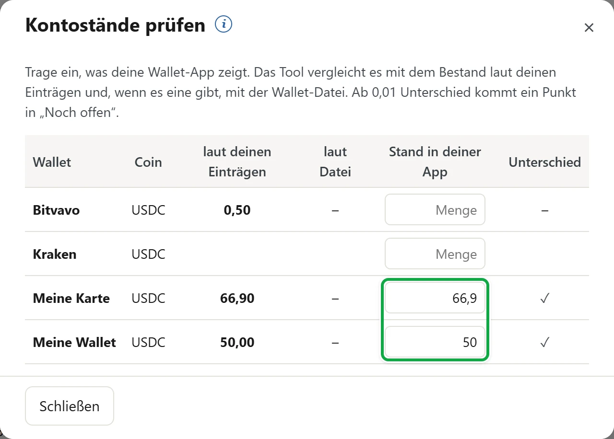
Trage bei jeder Wallet ein, was deine App zeigt, bei Anna 50,00 USDC in „Meine Wallet“ und 66,90 USDC auf der Karte. Passt es zu deinen Einträgen, steht bei „Unterschied“ ein ✓. Fehlt etwas, kommt ein gelber Punkt in „Noch offen“.

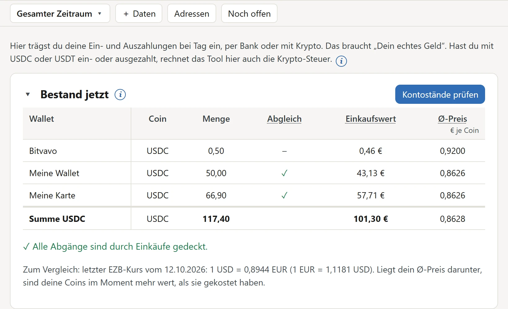
Danach steht bei „Noch offen“ keine Zahl mehr, und „Bestand jetzt“ zeigt, was in jeder Wallet liegt und was es gekostet hat.
Fertig
Fertig: Im Reiter „Steuer“ stehen jetzt auch deine Krypto-Werte.

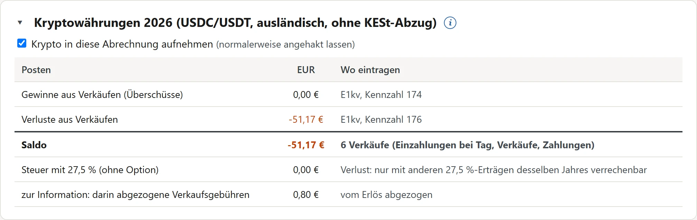
15. Wie es weitergeht
Jeden Monat (empfohlen)
- Speichere in MetaTrader 5 für jedes Konto den Report neu.
- Ziehe alle Reports in den Reiter „Reports“. Was schon da ist, erkennt das Tool.
- Füge die neuen Tag-Daten ein und sieh in „Noch offen“ nach.
- Speichere eine Sicherung.
Am Handy weitermachen
Speichere am PC im Reiter „Sicherung“ eine Sicherung. Bring die Datei aufs Handy, z. B. über deine Cloud, per Mail an dich selbst oder per Telegram an „Gespeicherte Nachrichten“, und speichere sie dort. Tippe dann am Handy im Reiter „Sicherung“ auf „Sicherung laden“. Das ersetzt alles, was am Handy im Tool steht. Schick die Datei nur an dich selbst.
Die Online-Version und die heruntergeladene Datei speichern getrennt. Auch zwischen ihnen nimmst du deine Daten mit einer Sicherung mit.
Später kommen in diese Anleitung: Wallet-Dateien, Steuer und Auswertung.